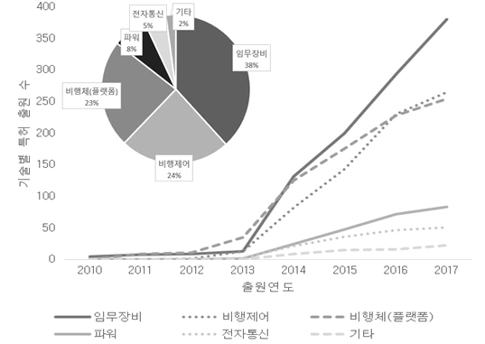
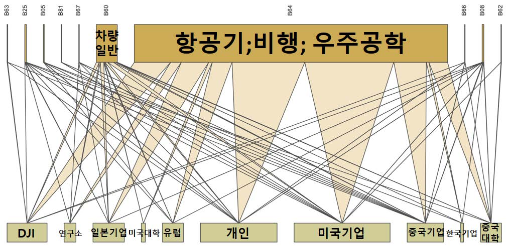
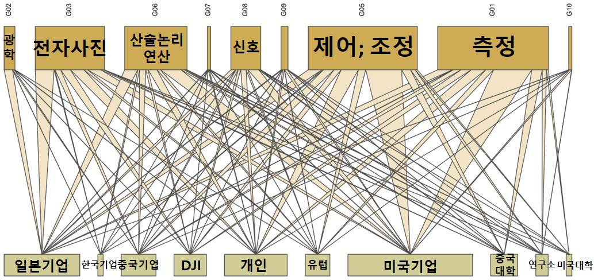
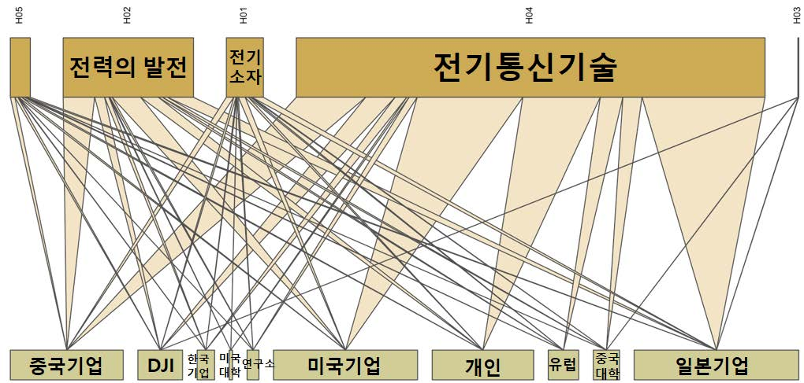
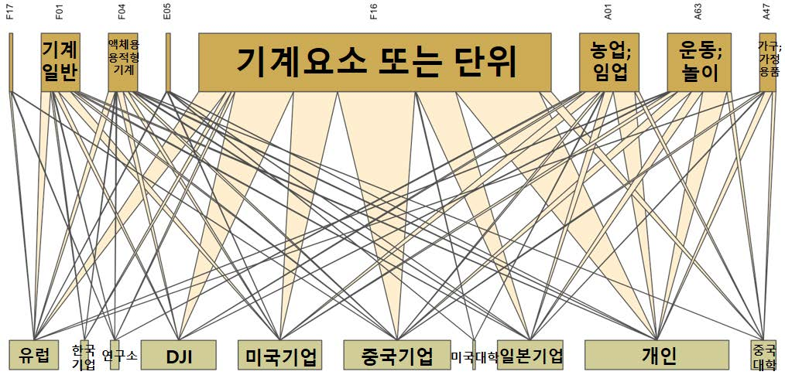

기술 발전과 사회 수요 변화로 드론(Drone) 시장이 가파르게 성장하는 가운데, 민간 드론산업에서는 중국의 DJI(大疆创新)社가 전세계 시장의 70%를 점유하며 선도하고 있다. 제조업 후발주자로 인식되던 중국 기업이 첨단산업 시장을 선점한 독특한 사례다. 본 연구는 DJI가 미국·중국·일본·한국·유럽에 출원한 특허 1,163건을 수집해 기술개발 방향과 기술지식의 흐름을 실증적으로 분석하고, DJI 혁신 전략의 실체를 규명한다.
- 드론 시장이 가파르게 성장하고 활용 범위가 확장되는 가운데, 민간 드론산업은 전세계 시장의 70%를 점유한 중국 DJI가 선도하고 있다. 중국기업이 첨단산업 시장을 선점한 독특한 사례로, 본 연구는 DJI가 출원한 특허데이터를 기반으로 기술개발 방향과 기술지식의 흐름을 분석해 혁신 전략을 규명한다.
- DJI는 드론기술을 활용하여 확장 적용이 가능한 고부가가치 분야로의 R&D를 강화하고 있다.
- 드론기술은 선행기술과 연계하여 발전하는 응용·개량기술의 성격을 가지며, DJI의 기술혁신에서도 선행기술의 역할이 컸다. DJI는 미국·일본 기업의 선행기술을 많이 인용했고, 배터리 등 일부 기술에서는 자체적인 기술개발 성과가 확인된다.
- DJI는 드론 관련 서비스를 제공하는 솔루션 사업(DaaS)으로 이행할 것으로 예측된다.
- DJI 혁신역량의 핵심은 기술의 소화·흡수(technology absorption) 능력이며, 기술을 흡수하는 단계에서 성장하여 자체적으로 필요한 기술을 융합하고 혁신을 주도하는 단계로 이행한 것으로 보인다.
1. 서론
1.1 연구배경 — 역동적 성장이 전망되는 무인항공산업
과거 무인항공기는 군사용 목적의 군수용 드론 중심이었지만, 미래에는 취미활동, 방송 촬영, 배달 등 민간상업용 드론을 중심으로 시장이 크게 성장할 것으로 예상된다. 미국 시장분석업체 틸그룹(Teal Group)에 따르면 세계 무인항공기 시장은 2019~2024년간 10% 이상의 연평균 복합 성장률(CAGR)로 성장할 전망이다. 무인항공 분야는 개발주기가 길고 자본·기술 측면에서 진입장벽이 높지만, 진입에 성공하면 장기간의 안정적 수익을 창출할 수 있는 지식기반 산업이다.
1.2 연구 주제 선정 — 왜 DJI인가
미국의 글로벌 기업들이 선도하는 다른 4차산업기술 분야와 달리, 민간상업용 드론 산업에서는 중국의 DJI가 선도하고 있다. 미국 이외 국가에서 최고 기술을 보유하며 세계 시장을 독점하는 기업이 있는 분야는 찾아보기 어렵다. 화웨이, 텐센트처럼 선진국에서 성장한 산업을 추격한 사례와도 다르다. 민간상업용 드론산업은 근래에 성장하기 시작한 초창기 산업으로, DJI는 모방자·추격자가 아닌 시장 선도자로서 직접 혁신경로를 창조하는 행보를 보여주고 있다.
1.3 선행연구의 고찰 — 왜 특허 분석인가
특허는 발명에 대해 부여하는 독점적 권리이며 기술혁신을 반영하는 대표적인 지표다(Ernst, 2003). 특허 출원건수가 혁신주체의 지식재산 스톡(stock)과 혁신성과를 반영한다면, 특허의 상호 인용관계는 지식재산의 흐름(flow)과 새로운 지식 창출 가능성을 반영한다. 본 연구는 지식 흐름의 구조적 특징을 분석하기 위해 네트워크 분석(Network analysis)을 활용했다. 연결개체(노드)와 연결관계(링크)를 시각적으로 보여줌으로써 얼마나 많은 기술이 연결되어 있는지, 지식의 흐름이 얼마나 활발한지 파악할 수 있다.
2. 연구대상: DJI의 성장과 시장창출
2.1 DJI의 성장
DJI(SZ DJI Technology Co., Ltd.)는 2006년 왕타오(Frank Wang)가 중국 선전에서 설립한 드론 연구개발·생산기업이다. 드론 핵심부품인 FC(Flight Controller) 제작에서 시작해 인공지능과 자체 정보처리 기능을 탑재한 완제품 제작까지 단 3년 만에 도달했다. 전체 종업원의 33%에 해당하는 2,600여 명을 전문 연구 인력으로 구성하고, 매년 매출액의 7%를 R&D에 투자하는 등 기술력 확보 최우선 원칙을 고수한다. "덩치가 커져도 연구 인력 비중 3분의 1을 유지한다"는 것이 CEO의 철학이다. 매출은 2010년 300만 위안에서 2013년 8억 위안, 2015년 10억 달러 돌파, 2017년 28.3억 달러로 무서운 속도로 성장했다. 2014년 골드만삭스 자료에서 DJI는 세계 상업용 드론시장의 70%를 점유하며 2위 Parrot을 큰 격차로 따돌렸고, 드론시장 조사업체 DRONII에 따르면 2019년 미국 드론 시장에서 DJI의 점유율은 무려 76.8%에 달한다.
2.2 DJI의 제품개발과 시장창출
초기 드론 분야는 완제품 개념이 없어 개인이 부품을 조립하고 소프트웨어 코드를 직접 다운로드해야 하는 DIY 방식이 주를 이뤘다. DJI는 별도의 조립 없이 바로 비행이 가능하고 각종 센서, 조종 송수신기, 카메라와 영상 송수신기까지 장착한 일체형 완제품 드론 '팬텀'을 출시해 큰 반향을 불러일으켰다. 군수용에 국한되어 있던 협소한 드론 시장을 개인·산업·공공의 민수용품으로 확장시키고, 소비자층을 전문가에서 비전문가로 넓힌 것이다. 최근에는 SDK 개발 플랫폼과 GS Pro, 플라이트 허브(Flight Hub), DJI 테라(DJI Terra) 등을 공개하며 드론 플랫폼 생태계를 확장하는 토탈 솔루션 기업으로 성장하고 있다.
3. 특허 분석 결과
3.2 특허 일반 분석 — 2014년의 변곡점
연도별 출원 추이를 보면 DJI의 첫 일체형 드론이 출시된 2013년 직후인 2014년을 기점으로 특허 수가 급증한다(2013년 43건 → 2014년 328건). 국가별로는 중국 39%, 미국 29%, 일본 26%, 유럽 5%인데, 초기의 자국(중국) 중심 출원에서 점차 PCT 출원 후 미국에 재출원하는 형태로 전략을 바꾸며 실제 드론 시장에서의 법적 보호를 강화했다. 실제로 2017년 DJI 해외매출액 비중은 전체 매출의 80%를 차지했다. 메인 IPC 기준으로는 비행분야(B64), 통신분야(H04), 제어조정 분야(G05), 전자사진 분야(G03), 기계요소 분야(F16)에 특허가 집중되어 있다.
3.3 기술별 분석 — 임무장비로 이동하는 무게중심
보유 특허를 파워, 비행체(플랫폼), 비행제어, 전자통신, 임무장비, 지상지원장비, 서비스의 7개 기술항목으로 분류한 결과, 임무장비 기술 특허가 약 38.3%로 가장 많았고 비행제어(23.9%), 비행체(플랫폼)(23.4%), 파워(7.5%), 전자통신(4.8%)이 뒤를 이었다. 2013년까지는 비행체(플랫폼) 관련 하드웨어 출원이 많았으나, 2014년 이후로는 센서, 카메라(촬영), 짐벌, 분사장치, 데이터 저장 등 임무장비 기술이 전체 출원 건수를 견인하고 있다. 2015년 이후로는 순수 이미지처리·데이터 저장기술 등 소프트웨어 기술도 다수 출원되었고, 드론을 활용한 가상 관광(Virtual Sightseeing) 등 서비스 특허도 눈에 띈다. DJI의 특허 적용 대상이 드론 제작에 한정되지 않는 포괄적인 기술 내용으로 확장되고 있는 것이다.

3.4.1 인용특허 양적 분석 — 응용·개량기술과 외부지식의 흡수
DJI의 총 인용문헌수는 약 2만 건, 피인용문헌수는 약 5천 건으로 인용문헌수가 4배가량 많았다. 이는 DJI의 기술이 원천기술보다는 선행기술과 연계하여 응용·개량적으로 개발된 기술의 성격이 강하다는 것을 의미한다. 소형 드론은 항공기 및 군용 무인기의 항법, 제어 및 하드웨어 설계, 제작기술을 기반으로 하기 때문이다.
인용특허의 출원인을 분류하면 기업 특허 인용이 72.3%로 가장 많았고 개인 17.4%, 대학 7.5%, 공공연구소 2.8% 순이었다. 기업 인용 특허 중 3분의 1 이상이 미국 기업의 특허로, DJI 특허 1,100여 건이 미국 기업 특허 4,900건 이상을 인용했다. 특허 1건당 평균 4개의 미국 기술을 인용한 셈이다. 미국은 Honeywell, Boeing 같은 항공우주 기업과 글로벌 통신 기업, 일본은 Canon 같은 카메라·이미지 처리 기업의 인용이 많았다. 한편 중국기업 인용 중 40% 이상이 DJI 자사 인용이었으며 매년 빠르게 증가했는데, 이는 선진국의 기술지식을 흡수하고 핵심 기술을 확보한 후 자사 인용을 통해 권리를 강화해 나가는 것으로 짐작할 수 있다.
3.4.2 인용특허 네트워크 시각화 — 기술지식은 어디서 왔는가
DJI 특허기술의 IPC(상단노드)와 인용특허의 출원 주체(하단노드)를 연결한 네트워크 시각화맵을 보면, 기술 분야별로 지식의 원천이 뚜렷이 갈린다. 처리조작(B) 기술에서는 항공기;비행;우주공학 특허가 압도적으로 많고 미국기업과의 링크가 가장 굵다. 드론의 가장 핵심적인 기술인 항공우주공학에서 미국이 원천기술을 보유하며 지식의 초기 확산자 역할을 수행하고 있다는 의미다.

물리학(G) 기술에서는 제어;조정과 측정기술의 빈도수가 가장 높았고 역시 미국기업과의 링크가 가장 굵었다. 반면 전자사진기술·광학기술은 일본기업과의 연결관계가 가장 강하게 나타났다. 드론의 항공 촬영기술과 직결되는 분야로, DJI가 촬영 기술에서 일본기업에 강하게 영향받았음을 보여준다.

전기(H) 기술에서는 전기통신기술(화상통신·촬영 데이터 관련)이 일본·미국 기업과 강하게 연결된 반면, '전력의 발전' 즉 드론 배터리 관련 기술은 중국기업(중국기업+DJI) 인용이 가장 많았다. 드론이 사용하는 리튬폴리머(LiPo) 배터리 기술에서 중국이 높은 기술력과 경쟁력을 보유하고 있음을 알 수 있는 대목이다.

생활필수품·고정구조물·기계공학(A·E·F) 분류에서는 드론 안정화 지지 기구와 카메라 고정장치가 포함된 기계요소 기술의 빈도수가 높았는데, 중국과 DJI 자체 기술 인용이 가장 강하게 나타났다. 자사인용이 많다는 것은 해당 특허가 기업의 중요한 기초기술이라는 의미다. 실제로 DJI는 Osmo, Ronin 같은 카메라 안정화 장치 기술에서 세계적으로 가장 앞서 있다고 평가받으며, 특허분석 결과도 카메라 안정화 장치가 경쟁사 대비 차별성을 부여하는 DJI의 전략적 기술임을 확인해준다. 빈도수는 작지만 농업 기술 노드도 관찰되는데, DJI가 2015년 농업용 드론 '아그라스'를 출시하며 농약 살포, 파종 등 농업용 드론 분야에 박차를 가하고 있는 것과 맞닿아 있다.

4. 결론 및 시사점
특허분석을 종합하면, DJI의 특허는 파워·비행체(플랫폼)·비행제어·전자통신·임무장비의 5가지 기술로 분류되며 2014년 이후 임무장비 기술의 비중이 점차 커지고 있다. 인용특허 분석에서는 항공기·우주공학·제어기술은 미국기업, 촬영·이미지 처리 기술은 일본기업의 선행기술을 가장 많이 인용했고, 배터리기술과 카메라 고정장치 기술에서는 중국기업과 DJI의 자체적인 기술개발 성과가 확인되었다.
- DaaS로의 이행: 소프트웨어 중심의 임무장비 특허 급증과 가상 관광 등 서비스 특허의 등장으로 볼 때, DJI는 하드웨어 제작기업에서 벗어나 드론 관련 서비스를 제공하는 솔루션 사업(DaaS: Drone as a Service), 플랫폼 사업자로 확장할 것으로 예측된다.
- 흡수능력이 혁신역량의 핵심: DJI는 드론의 핵심 기술을 축적하는 과정에서 다양한 외부 선행기술을 인용하며 활발하게 지식을 수용했다. 외부의 원천기술을 채택·흡수·활용하기 위해서는 내부의 뛰어난 연구개발 역량 구축이 필연적이었으며, 이 기술 소화·흡수(technology absorption) 능력이 DJI 기술 역량 확보의 원동력이었다.
- 흡수에서 주도로: DJI는 기술을 흡수하는 단계에서 성장하여 자체적으로 필요한 기술을 융합하고 혁신을 주도하는 단계로 이행했다. 배터리 기술과 일부 기계요소에서 중국의 기술 국산화와 DJI 원천기술의 축적이 확인되며, 그동안 혁신의 관점에서 주목받지 못했던 중국기업이 원천기술을 개발해 글로벌 표준을 전파하고 있다.